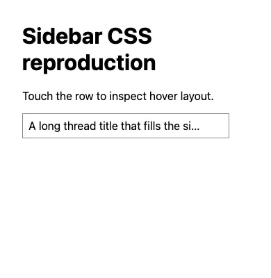
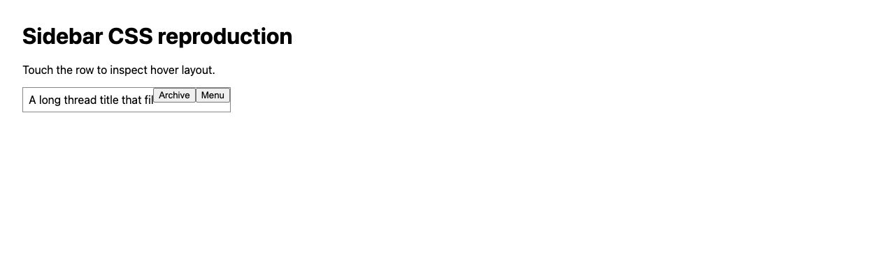

#3832 · Touch pointer hover styling
Bug · Priority Medium · Effort Low · ui, mobile
2026-09-17 · base 3e9bef842539d5a1dd83d648fe9d5a7a20de4397 · Issue
Verdict: PARTIALLY REPRODUCED · Root-cause confidence: high for the CSS cascade; medium for the complete reported interaction.
1. TL;DR
The sidebar stylesheet applies its hover inset without checking whether the primary pointer can hover. A minimal rendered fixture using unchanged main-branch CSS reserves 30px under forced hover on a touch pointer, including when the compact action overlay is hidden. At 1280px the actions become visible. These results repeated from a second clean checkout. A real emulated tap did not reliably retain hover, so this does not establish the persistent interaction in the full application.
2. Claims vs findings
| Claim | Finding |
|---|---|
| Touch hover can reserve 30px | Verified with forced pseudo-state and source CSS in two runs. |
| Compact actions remain hidden | Verified in the fixture with the responsive display rule modeled from ThreadRow. |
| Wide touch layout reveals actions | Verified under forced hover at 1280px. |
| A tap leaves persistent hover in the app | Unverified. Transient padding was observed after tap; a later evaluation returned 0px. The full ThreadRow was not mounted. |
| Keyboard and open menus must remain usable | Source has separate focus/menu selectors; no fix or full interaction regression was tested. |
3. Environment
Trusted get-bb/bb origin/main at the commit above; macOS, Node 22.22.3, headless Chrome through BB Browser Automation. Two fresh browser sessions; primary pointer reports hover:none and pointer:coarse. Viewports 390×400 and 1280×400. No server ports, application store, provider sessions, or user data were used. Frozen install passed through Corepack. Turbo build: 58 successful tasks, 54 cached. The initial pnpm launcher failed because its target was absent; a temporary Corepack shim resolved it.
4. Minimal reproduction
- Check out the trusted base commit in a clean checkout.
- Open a BB Browser Automation local headless session on the test host.
- Run the saved Python script with the checkout path and returned browser session ID.
- The script extracts the sidebar action rules directly from theme.css, renders a minimal row, enables touch input, taps it, then forces the row hover pseudo-state via Chrome DevTools Protocol.
- Compare computed inset and action visibility at both widths. The forced state isolates the cascade; it does not prove that a physical tap persists.
bb browser-automation open --backend local --headless --machine <test-host-id> --json python3 repro.py <trusted-checkout> <session-id>
Expected touch-only resting layout: padding 0px and no hover-only actions. Actual forced-hover measurements, identical in both runs:
[
{
"width": 390,
"before": "0px",
"hoverNone": true,
"coarse": true,
"hover": false,
"padding": "30px",
"opacity": "0",
"display": "none"
},
{
"width": 1280,
"before": "0px",
"hoverNone": true,
"coarse": true,
"hover": false,
"padding": "30px",
"opacity": "1",
"display": "block"
}
]
The JavaScript :hover match is false even while CDP forces the style state; computed CSS values are the observed evidence.


Reproduction script · Run 1 measurements · Run 2 measurements
import sys,json,subprocess,pathlib
root=pathlib.Path(sys.argv[1]); session=sys.argv[2]
css=(root/'apps/app/src/components/ui/theme.css').read_text()
css=css[css.index(' .bb-sidebar-hover-actions {'):css.index(' [data-sidebar-sticky-stack] [data-sidebar-sticky-tier="label"]')]
html='''<style>:root{--spacing:4px}body{font:16px system-ui;padding:24px}.bb-sidebar-hover-actions-row{position:relative;width:280px;border:1px solid #888;padding:8px}.bb-sidebar-hover-actions-inset{display:block;white-space:nowrap;overflow:hidden;text-overflow:ellipsis}.bb-sidebar-hover-actions{position:absolute;right:0;top:0;background:white;height:100%}.compact-hidden{}@media(max-width:767px) and (pointer:coarse){.compact-hidden{display:none}}'''+css+'''</style><h1>Sidebar CSS reproduction</h1><p>Touch the row to inspect hover layout.</p><div class="bb-sidebar-hover-actions-row"><span class="bb-sidebar-hover-actions-inset">A long thread title that fills the sidebar row</span><div class="bb-sidebar-hover-actions compact-hidden"><button>Archive</button><button>Menu</button></div></div>'''
script='const p=await browser.getPage("main");\n'
script+='await p.setViewport({width:1280,height:400,hasTouch:true,isMobile:false});\n'
script+='await p.setContent('+json.dumps(html)+');\n'
script+='''const results=[]; const cdp=await p.createCDPSession(); await cdp.send('DOM.enable'); await cdp.send('CSS.enable');
for(const width of [390,1280]) {
await p.setViewport({width,height:400,hasTouch:true,isMobile:false});
await p.mouse.move(0,0);
const before=await p.evaluate(()=>getComputedStyle(document.querySelector('.bb-sidebar-hover-actions-inset')).paddingRight);
const row=await p.$('.bb-sidebar-hover-actions-row');const b=await row.boundingBox();
await p.touchscreen.tap(b.x+20,b.y+10);
const doc=await cdp.send('DOM.getDocument');const {nodeId}=await cdp.send('DOM.querySelector',{nodeId:doc.root.nodeId,selector:'.bb-sidebar-hover-actions-row'});await cdp.send('CSS.forcePseudoState',{nodeId,forcedPseudoClasses:['hover']});
results.push(await p.evaluate((before)=>({width:innerWidth,before,hoverNone:matchMedia('(hover: none)').matches,coarse:matchMedia('(pointer: coarse)').matches,hover:document.querySelector('.bb-sidebar-hover-actions-row').matches(':hover'),padding:getComputedStyle(document.querySelector('.bb-sidebar-hover-actions-inset')).paddingRight,opacity:getComputedStyle(document.querySelector('.bb-sidebar-hover-actions')).opacity,display:getComputedStyle(document.querySelector('.bb-sidebar-hover-actions')).display}),before));
await p.shot({type:'jpeg'});
await cdp.send('CSS.forcePseudoState',{nodeId,forcedPseudoClasses:[]});
}
console.log(JSON.stringify(results));
await p.shot({type:'jpeg'}); undefined;
'''
r=subprocess.run(['bb','browser-automation','run',session,'--script',script,'--json'],capture_output=True,text=True)
print(r.stdout);print(r.stderr,file=sys.stderr)
5. Root cause
Hover and focus rules apply the action opacity and 30px inset without a hover-capability media query. The inset hover selector has specificity (0,3,0), while the compact reset has (0,2,0); the reset therefore loses even though it appears later. The touch override also stops at 767px. ThreadRow hides the action container only at compact coarse-pointer widths, explaining the wide-layout exposure.
6. Proposed fix and next test
Restrict hover-only inset, action reveal, and fade behavior to hover-capable primary pointers while preserving focus-visible and explicit menu-open behavior. First reproduce the retained state in the actual sidebar on a browser/device that synthesizes persistent hover, then add a regression spanning compact/wide touch, mouse, keyboard, and open menus. No production change or PR was made: this report does not establish the full persistent-touch reproduction required for the autopilot fix gate.
7. Verification
The same agent created a second clean detached checkout named verify at the exact recorded commit and opened a fresh browser session. Running the same script against that checkout yielded the identical two measurement records. No application process or data directory was needed. The second checkout's source was unchanged. The report was narrowed to PARTIALLY REPRODUCED because only a minimal fixture with forced hover was repeatable; native persistent hover and the full app were not established. This was a repeat check by the same agent, not independent verification.
8. Related issues and PRs
No open PR was found through issue cross-reference metadata or an open-PR search for 3832. Duplicate status and other issue comparisons were not independently established.
9. Appendix
Repository identity was checked through GitHub metadata; origin redirects to get-bb/bb. Commands included git fetch origin main; git rev-parse origin/main; git worktree add --detach; corepack pnpm install --frozen-lockfile --prefer-offline; corepack pnpm exec turbo run build; and the reproduction commands above. Build output was kept locally because cache logs contain host paths. Screenshots are actual browser JPEG captures converted losslessly to PNG containers. No external issue links, proposed patches, or issue-provided code were executed. Issue content was treated only as untrusted claims.
> AGENT GENERATED